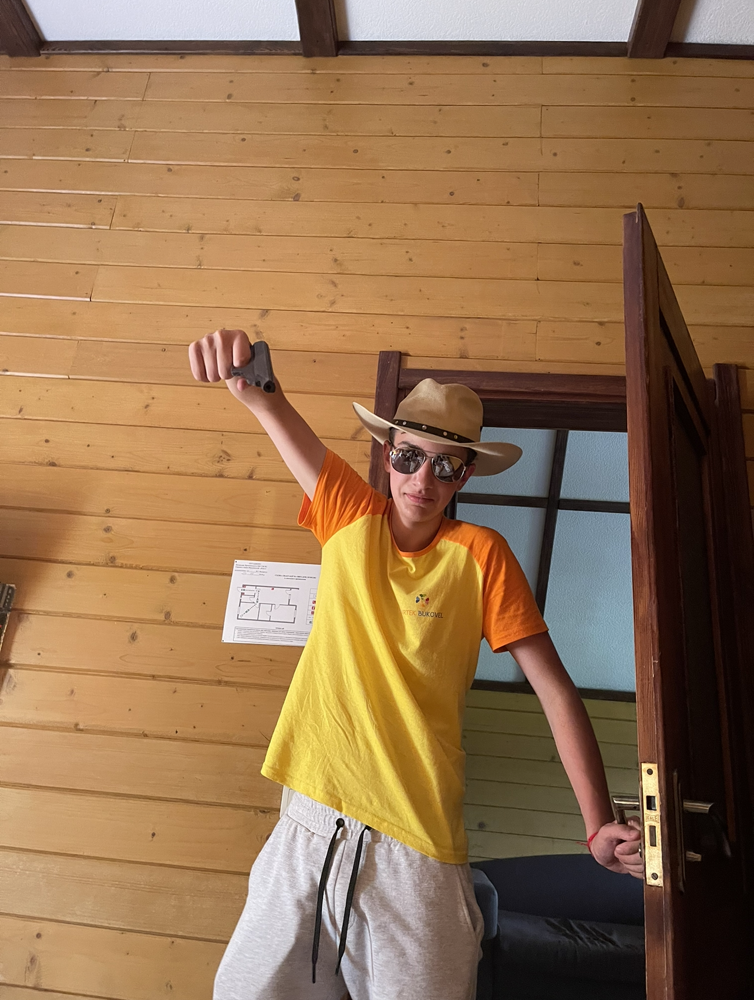

Boiko Danylo
NY Lyceum and ItStep graduate üíª üéì /
Summary
Nothing Yet)
Education
School:
-
Successfully studied at Novoyavorivskiy Lyceum for 6 years in Ukraineüá∫üᶠand successfully completed it at the faculty of mathematics
Extra School:
-
Successfully studied at It Step Academy for 3 years in Ukraineüá∫üᶠand successfully completed it at the faculty of web development
Skills:
Нажми на туговово чуда